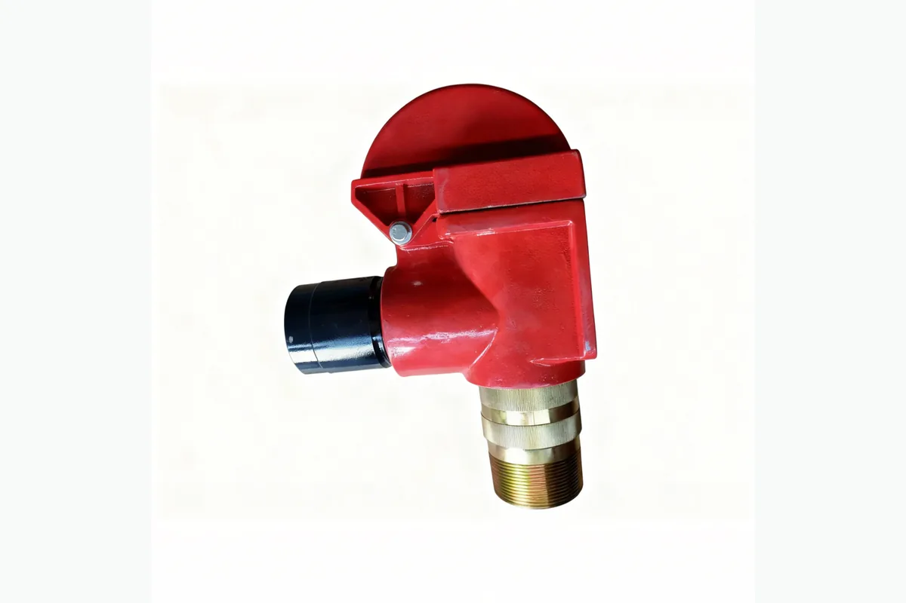

كيفية طلب عرض سعر
- أرسل رقم القطعة أو موديل المعدة.
- أرفق صورة المنتج أو الرسم الفني إن توفر.
- سنراجع المطابقة ونجهز تفاصيل العرض.
مضخات الطين وقطع الغيار
مضخات الطين وقطع الغيار. دبوس قص Safety صمام لمشاريع صيانة واستبدال معدات حقول النفط. يمكن للمشتري إرسال رقم القطعة أو موديل المعدة أو صورة المنتج أو الرسم الفني لطلب عرض سعر.
دبوس قص Safety صمام لمشاريع صيانة واستبدال معدات حقول النفط. يمكن للمشتري إرسال رقم القطعة أو موديل المعدة أو صورة المنتج أو الرسم الفني لطلب عرض سعر.
دعم مطابقة المواصفات وتغليف التصدير والتواصل عبر واتساب والبريد الإلكتروني لمشتري حقول النفط.
الوصف
الصور المخصصة لمواد الوصف تظهر هنا ولا تستخدم كصورة بطاقة المنتج.

مطابقة رقم القطعة
احتوت مواد المصدر على أرقام مرجعية، لكن أسماء الجدول الأصلي لم تكن موثوقة بما يكفي للنشر المباشر. تم الاحتفاظ بالأرقام للمطابقة وتأكيد عرض السعر.
أرسل رقم OEM أو موديل المضخة أو موديل الجهاز أو صورة المنتج أو الرسم الفني. ندعم مطابقة رقم القطعة ومطابقة الرسوم ومطابقة العينة لقطع غيار أجهزة الحفر ومضخات الطين والونشات والهيدروليك ومعدات رأس البئر.
| اسم القطعة / المكوّن | رقم مرجعي / كود موديل | المعدة المناسبة | ملاحظات |
|---|---|---|---|
| دبوس قص Safety صمام - مكوّن | NB1000G.11 | مضخات الطين وقطع الغيار | رقم مرجعي محفوظ من المصدر. يجب تأكيده باستخدام موديل المعدة أو صورة المنتج أو الرسم الفني قبل عرض السعر. |
| دبوس قص Safety صمام - مكوّن | NB800G.05.00 | مضخات الطين وقطع الغيار | رقم مرجعي محفوظ من المصدر. يجب تأكيده باستخدام موديل المعدة أو صورة المنتج أو الرسم الفني قبل عرض السعر. |
| دبوس قص Safety صمام - مكوّن | NB800G.20 | مضخات الطين وقطع الغيار | رقم مرجعي محفوظ من المصدر. يجب تأكيده باستخدام موديل المعدة أو صورة المنتج أو الرسم الفني قبل عرض السعر. |
| دبوس قص Safety صمام - مكوّن | NB1000G.05.00 | مضخات الطين وقطع الغيار | رقم مرجعي محفوظ من المصدر. يجب تأكيده باستخدام موديل المعدة أو صورة المنتج أو الرسم الفني قبل عرض السعر. |
| دبوس قص Safety صمام - مكوّن | NB800G.22.00 | مضخات الطين وقطع الغيار | رقم مرجعي محفوظ من المصدر. يجب تأكيده باستخدام موديل المعدة أو صورة المنتج أو الرسم الفني قبل عرض السعر. |
| دبوس قص Safety صمام - مكوّن | NB1000G.14 | مضخات الطين وقطع الغيار | رقم مرجعي محفوظ من المصدر. يجب تأكيده باستخدام موديل المعدة أو صورة المنتج أو الرسم الفني قبل عرض السعر. |
| دبوس قص Safety صمام - مكوّن | NB800G.18 | مضخات الطين وقطع الغيار | رقم مرجعي محفوظ من المصدر. يجب تأكيده باستخدام موديل المعدة أو صورة المنتج أو الرسم الفني قبل عرض السعر. |
| دبوس قص Safety صمام - مكوّن | NB800G.04.00 | مضخات الطين وقطع الغيار | رقم مرجعي محفوظ من المصدر. يجب تأكيده باستخدام موديل المعدة أو صورة المنتج أو الرسم الفني قبل عرض السعر. |
| دبوس قص Safety صمام - مكوّن | NB800G.05.01.00 | مضخات الطين وقطع الغيار | رقم مرجعي محفوظ من المصدر. يجب تأكيده باستخدام موديل المعدة أو صورة المنتج أو الرسم الفني قبل عرض السعر. |
| دبوس قص Safety صمام - مكوّن | NB1000G.04.00 | مضخات الطين وقطع الغيار | رقم مرجعي محفوظ من المصدر. يجب تأكيده باستخدام موديل المعدة أو صورة المنتج أو الرسم الفني قبل عرض السعر. |
| دبوس قص Safety صمام - مكوّن | NB800G.05.24.00 | مضخات الطين وقطع الغيار | رقم مرجعي محفوظ من المصدر. يجب تأكيده باستخدام موديل المعدة أو صورة المنتج أو الرسم الفني قبل عرض السعر. |
| دبوس قص Safety صمام - مكوّن | NB1000G.05.05.00 | مضخات الطين وقطع الغيار | رقم مرجعي محفوظ من المصدر. يجب تأكيده باستخدام موديل المعدة أو صورة المنتج أو الرسم الفني قبل عرض السعر. |
| دبوس قص Safety صمام - مكوّن | NB800G.03.00 | مضخات الطين وقطع الغيار | رقم مرجعي محفوظ من المصدر. يجب تأكيده باستخدام موديل المعدة أو صورة المنتج أو الرسم الفني قبل عرض السعر. |
| دبوس قص Safety صمام - مكوّن | NB800G.05.34 | مضخات الطين وقطع الغيار | رقم مرجعي محفوظ من المصدر. يجب تأكيده باستخدام موديل المعدة أو صورة المنتج أو الرسم الفني قبل عرض السعر. |
| دبوس قص Safety صمام - مكوّن | NB1000G.03.00 | مضخات الطين وقطع الغيار | رقم مرجعي محفوظ من المصدر. يجب تأكيده باستخدام موديل المعدة أو صورة المنتج أو الرسم الفني قبل عرض السعر. |
| دبوس قص Safety صمام - مكوّن | NB800G.05.03 | مضخات الطين وقطع الغيار | رقم مرجعي محفوظ من المصدر. يجب تأكيده باستخدام موديل المعدة أو صورة المنتج أو الرسم الفني قبل عرض السعر. |
| دبوس قص Safety صمام - مكوّن | NB800G.02.00 | مضخات الطين وقطع الغيار | رقم مرجعي محفوظ من المصدر. يجب تأكيده باستخدام موديل المعدة أو صورة المنتج أو الرسم الفني قبل عرض السعر. |
| دبوس قص Safety صمام - مكوّن | NB800G.05.04 | مضخات الطين وقطع الغيار | رقم مرجعي محفوظ من المصدر. يجب تأكيده باستخدام موديل المعدة أو صورة المنتج أو الرسم الفني قبل عرض السعر. |
| دبوس قص Safety صمام - مكوّن | NB1000G.02.00 | مضخات الطين وقطع الغيار | رقم مرجعي محفوظ من المصدر. يجب تأكيده باستخدام موديل المعدة أو صورة المنتج أو الرسم الفني قبل عرض السعر. |
| دبوس قص Safety صمام - مكوّن | NB800G.05.05.00 | مضخات الطين وقطع الغيار | رقم مرجعي محفوظ من المصدر. يجب تأكيده باستخدام موديل المعدة أو صورة المنتج أو الرسم الفني قبل عرض السعر. |
| دبوس قص Safety صمام - مكوّن | NB800G.06.00 | مضخات الطين وقطع الغيار | رقم مرجعي محفوظ من المصدر. يجب تأكيده باستخدام موديل المعدة أو صورة المنتج أو الرسم الفني قبل عرض السعر. |
| دبوس قص Safety صمام - مكوّن | o-قطعة قطعة 75×5.3 | مضخات الطين وقطع الغيار | رقم مرجعي محفوظ من المصدر. يجب تأكيده باستخدام موديل المعدة أو صورة المنتج أو الرسم الفني قبل عرض السعر. |
| دبوس قص Safety صمام - مكوّن | 75×5.3 | مضخات الطين وقطع الغيار | رقم مرجعي محفوظ من المصدر. يجب تأكيده باستخدام موديل المعدة أو صورة المنتج أو الرسم الفني قبل عرض السعر. |
| دبوس قص Safety صمام - مكوّن | NB1000G.06.00 | مضخات الطين وقطع الغيار | رقم مرجعي محفوظ من المصدر. يجب تأكيده باستخدام موديل المعدة أو صورة المنتج أو الرسم الفني قبل عرض السعر. |
| دبوس قص Safety صمام - مكوّن | o-قطعة قطعة 97.5×3.55 | مضخات الطين وقطع الغيار | رقم مرجعي محفوظ من المصدر. يجب تأكيده باستخدام موديل المعدة أو صورة المنتج أو الرسم الفني قبل عرض السعر. |
| دبوس قص Safety صمام - مكوّن | NB800G.08.00 | مضخات الطين وقطع الغيار | رقم مرجعي محفوظ من المصدر. يجب تأكيده باستخدام موديل المعدة أو صورة المنتج أو الرسم الفني قبل عرض السعر. |
| دبوس قص Safety صمام - مكوّن | NB800G.05.08 | مضخات الطين وقطع الغيار | رقم مرجعي محفوظ من المصدر. يجب تأكيده باستخدام موديل المعدة أو صورة المنتج أو الرسم الفني قبل عرض السعر. |
| دبوس قص Safety صمام - مكوّن | NB1000G.08.00 | مضخات الطين وقطع الغيار | رقم مرجعي محفوظ من المصدر. يجب تأكيده باستخدام موديل المعدة أو صورة المنتج أو الرسم الفني قبل عرض السعر. |
| دبوس قص Safety صمام - مكوّن | NB1000G.05.01 | مضخات الطين وقطع الغيار | رقم مرجعي محفوظ من المصدر. يجب تأكيده باستخدام موديل المعدة أو صورة المنتج أو الرسم الفني قبل عرض السعر. |
| دبوس قص Safety صمام - مكوّن | NB800G.25.00 | مضخات الطين وقطع الغيار | رقم مرجعي محفوظ من المصدر. يجب تأكيده باستخدام موديل المعدة أو صورة المنتج أو الرسم الفني قبل عرض السعر. |
| دبوس قص Safety صمام - مكوّن | NB800G.05.10 | مضخات الطين وقطع الغيار | رقم مرجعي محفوظ من المصدر. يجب تأكيده باستخدام موديل المعدة أو صورة المنتج أو الرسم الفني قبل عرض السعر. |
| دبوس قص Safety صمام - مكوّن | NB1000G.16.00 | مضخات الطين وقطع الغيار | رقم مرجعي محفوظ من المصدر. يجب تأكيده باستخدام موديل المعدة أو صورة المنتج أو الرسم الفني قبل عرض السعر. |
| دبوس قص Safety صمام - مكوّن | NB800G.09 | مضخات الطين وقطع الغيار | رقم مرجعي محفوظ من المصدر. يجب تأكيده باستخدام موديل المعدة أو صورة المنتج أو الرسم الفني قبل عرض السعر. |
| دبوس قص Safety صمام - مكوّن | NB800G.05.11 | مضخات الطين وقطع الغيار | رقم مرجعي محفوظ من المصدر. يجب تأكيده باستخدام موديل المعدة أو صورة المنتج أو الرسم الفني قبل عرض السعر. |
| دبوس قص Safety صمام - مكوّن | قطعة قطعة 25×10×4000 | مضخات الطين وقطع الغيار | رقم مرجعي محفوظ من المصدر. يجب تأكيده باستخدام موديل المعدة أو صورة المنتج أو الرسم الفني قبل عرض السعر. |
| دبوس قص Safety صمام - مكوّن | 25×10×4000 | مضخات الطين وقطع الغيار | رقم مرجعي محفوظ من المصدر. يجب تأكيده باستخدام موديل المعدة أو صورة المنتج أو الرسم الفني قبل عرض السعر. |
| دبوس قص Safety صمام - مكوّن | قطعة قطعة 25*10*4880 | مضخات الطين وقطع الغيار | رقم مرجعي محفوظ من المصدر. يجب تأكيده باستخدام موديل المعدة أو صورة المنتج أو الرسم الفني قبل عرض السعر. |
| دبوس قص Safety صمام - مكوّن | 25*10*4880 | مضخات الطين وقطع الغيار | رقم مرجعي محفوظ من المصدر. يجب تأكيده باستخدام موديل المعدة أو صورة المنتج أو الرسم الفني قبل عرض السعر. |
| دبوس قص Safety صمام - مكوّن | NB800G.05.12 | مضخات الطين وقطع الغيار | رقم مرجعي محفوظ من المصدر. يجب تأكيده باستخدام موديل المعدة أو صورة المنتج أو الرسم الفني قبل عرض السعر. |
| دبوس قص Safety صمام - مكوّن | NB800G.10.00 | مضخات الطين وقطع الغيار | رقم مرجعي محفوظ من المصدر. يجب تأكيده باستخدام موديل المعدة أو صورة المنتج أو الرسم الفني قبل عرض السعر. |
| دبوس قص Safety صمام - مكوّن | NB800G.05.13.00 | مضخات الطين وقطع الغيار | رقم مرجعي محفوظ من المصدر. يجب تأكيده باستخدام موديل المعدة أو صورة المنتج أو الرسم الفني قبل عرض السعر. |
| دبوس قص Safety صمام - مكوّن | NB800G.15.00 | مضخات الطين وقطع الغيار | رقم مرجعي محفوظ من المصدر. يجب تأكيده باستخدام موديل المعدة أو صورة المنتج أو الرسم الفني قبل عرض السعر. |
| دبوس قص Safety صمام - مكوّن | NB800G.05.20 | مضخات الطين وقطع الغيار | رقم مرجعي محفوظ من المصدر. يجب تأكيده باستخدام موديل المعدة أو صورة المنتج أو الرسم الفني قبل عرض السعر. |
| دبوس قص Safety صمام - مكوّن | NB800G.05.14 | مضخات الطين وقطع الغيار | رقم مرجعي محفوظ من المصدر. يجب تأكيده باستخدام موديل المعدة أو صورة المنتج أو الرسم الفني قبل عرض السعر. |
| دبوس قص Safety صمام - مكوّن | NB800G.13 | مضخات الطين وقطع الغيار | رقم مرجعي محفوظ من المصدر. يجب تأكيده باستخدام موديل المعدة أو صورة المنتج أو الرسم الفني قبل عرض السعر. |
| دبوس قص Safety صمام - مكوّن | NB800G.05.16 | مضخات الطين وقطع الغيار | رقم مرجعي محفوظ من المصدر. يجب تأكيده باستخدام موديل المعدة أو صورة المنتج أو الرسم الفني قبل عرض السعر. |
| دبوس قص Safety صمام - مكوّن | GH3161-0516 | مضخات الطين وقطع الغيار | رقم مرجعي محفوظ من المصدر. يجب تأكيده باستخدام موديل المعدة أو صورة المنتج أو الرسم الفني قبل عرض السعر. |
| دبوس قص Safety صمام - مكوّن | GH3161-0538 12″ | مضخات الطين وقطع الغيار | رقم مرجعي محفوظ من المصدر. يجب تأكيده باستخدام موديل المعدة أو صورة المنتج أو الرسم الفني قبل عرض السعر. |
| دبوس قص Safety صمام - مكوّن | GH3161-0517-00 | مضخات الطين وقطع الغيار | رقم مرجعي محفوظ من المصدر. يجب تأكيده باستخدام موديل المعدة أو صورة المنتج أو الرسم الفني قبل عرض السعر. |
| دبوس قص Safety صمام - مكوّن | GH3161-0539 5 1/8″ | مضخات الطين وقطع الغيار | رقم مرجعي محفوظ من المصدر. يجب تأكيده باستخدام موديل المعدة أو صورة المنتج أو الرسم الفني قبل عرض السعر. |
| دبوس قص Safety صمام - مكوّن | GH3161-0518 | مضخات الطين وقطع الغيار | رقم مرجعي محفوظ من المصدر. يجب تأكيده باستخدام موديل المعدة أو صورة المنتج أو الرسم الفني قبل عرض السعر. |
| دبوس قص Safety صمام - مكوّن | قطعة قطعة 39 | مضخات الطين وقطع الغيار | رقم مرجعي محفوظ من المصدر. يجب تأكيده باستخدام موديل المعدة أو صورة المنتج أو الرسم الفني قبل عرض السعر. |
| دبوس قص Safety صمام - مكوّن | GH3161-0540 | مضخات الطين وقطع الغيار | رقم مرجعي محفوظ من المصدر. يجب تأكيده باستخدام موديل المعدة أو صورة المنتج أو الرسم الفني قبل عرض السعر. |
| دبوس قص Safety صمام - مكوّن | GH3161-0519-00 | مضخات الطين وقطع الغيار | رقم مرجعي محفوظ من المصدر. يجب تأكيده باستخدام موديل المعدة أو صورة المنتج أو الرسم الفني قبل عرض السعر. |
| دبوس قص Safety صمام - مكوّن | قطعة قطعة M27×80 | مضخات الطين وقطع الغيار | رقم مرجعي محفوظ من المصدر. يجب تأكيده باستخدام موديل المعدة أو صورة المنتج أو الرسم الفني قبل عرض السعر. |
| دبوس قص Safety صمام - مكوّن | B34521-200-700-69 | مضخات الطين وقطع الغيار | رقم مرجعي محفوظ من المصدر. يجب تأكيده باستخدام موديل المعدة أو صورة المنتج أو الرسم الفني قبل عرض السعر. |
| دبوس قص Safety صمام - مكوّن | قطعة قطعة 3/16×3/16×1 | مضخات الطين وقطع الغيار | رقم مرجعي محفوظ من المصدر. يجب تأكيده باستخدام موديل المعدة أو صورة المنتج أو الرسم الفني قبل عرض السعر. |
| دبوس قص Safety صمام - مكوّن | GH3161-0601 | مضخات الطين وقطع الغيار | رقم مرجعي محفوظ من المصدر. يجب تأكيده باستخدام موديل المعدة أو صورة المنتج أو الرسم الفني قبل عرض السعر. |
| دبوس قص Safety صمام - مكوّن | GH3161-0520 | مضخات الطين وقطع الغيار | رقم مرجعي محفوظ من المصدر. يجب تأكيده باستخدام موديل المعدة أو صورة المنتج أو الرسم الفني قبل عرض السعر. |
| دبوس قص Safety صمام - مكوّن | GH3161-0602-00 | مضخات الطين وقطع الغيار | رقم مرجعي محفوظ من المصدر. يجب تأكيده باستخدام موديل المعدة أو صورة المنتج أو الرسم الفني قبل عرض السعر. |
| دبوس قص Safety صمام - مكوّن | GH3161-0522-00 | مضخات الطين وقطع الغيار | رقم مرجعي محفوظ من المصدر. يجب تأكيده باستخدام موديل المعدة أو صورة المنتج أو الرسم الفني قبل عرض السعر. |
| دبوس قص Safety صمام - مكوّن | قطعة NPT1/4×M14×1.5 | مضخات الطين وقطع الغيار | رقم مرجعي محفوظ من المصدر. يجب تأكيده باستخدام موديل المعدة أو صورة المنتج أو الرسم الفني قبل عرض السعر. |
| دبوس قص Safety صمام - مكوّن | GH3161-0523 | مضخات الطين وقطع الغيار | رقم مرجعي محفوظ من المصدر. يجب تأكيده باستخدام موديل المعدة أو صورة المنتج أو الرسم الفني قبل عرض السعر. |
| دبوس قص Safety صمام - مكوّن | GH3161-0624-00 | مضخات الطين وقطع الغيار | رقم مرجعي محفوظ من المصدر. يجب تأكيده باستخدام موديل المعدة أو صورة المنتج أو الرسم الفني قبل عرض السعر. |
| دبوس قص Safety صمام - مكوّن | GH3161-0524-00 | مضخات الطين وقطع الغيار | رقم مرجعي محفوظ من المصدر. يجب تأكيده باستخدام موديل المعدة أو صورة المنتج أو الرسم الفني قبل عرض السعر. |
| دبوس قص Safety صمام - مكوّن | GH3161-0625-00 | مضخات الطين وقطع الغيار | رقم مرجعي محفوظ من المصدر. يجب تأكيده باستخدام موديل المعدة أو صورة المنتج أو الرسم الفني قبل عرض السعر. |
| دبوس قص Safety صمام - مكوّن | قطعة قطعة M22×65 | مضخات الطين وقطع الغيار | رقم مرجعي محفوظ من المصدر. يجب تأكيده باستخدام موديل المعدة أو صورة المنتج أو الرسم الفني قبل عرض السعر. |
| دبوس قص Safety صمام - مكوّن | GH3161-0542 | مضخات الطين وقطع الغيار | رقم مرجعي محفوظ من المصدر. يجب تأكيده باستخدام موديل المعدة أو صورة المنتج أو الرسم الفني قبل عرض السعر. |
| دبوس قص Safety صمام - مكوّن | GH3161-0634 | مضخات الطين وقطع الغيار | رقم مرجعي محفوظ من المصدر. يجب تأكيده باستخدام موديل المعدة أو صورة المنتج أو الرسم الفني قبل عرض السعر. |
| دبوس قص Safety صمام - مكوّن | GH3161-0525-00 | مضخات الطين وقطع الغيار | رقم مرجعي محفوظ من المصدر. يجب تأكيده باستخدام موديل المعدة أو صورة المنتج أو الرسم الفني قبل عرض السعر. |
| دبوس قص Safety صمام - مكوّن | 2Spart قطعة | مضخات الطين وقطع الغيار | رقم مرجعي محفوظ من المصدر. يجب تأكيده باستخدام موديل المعدة أو صورة المنتج أو الرسم الفني قبل عرض السعر. |
| دبوس قص Safety صمام - مكوّن | GH3161-0635 | مضخات الطين وقطع الغيار | رقم مرجعي محفوظ من المصدر. يجب تأكيده باستخدام موديل المعدة أو صورة المنتج أو الرسم الفني قبل عرض السعر. |
| دبوس قص Safety صمام - مكوّن | GH3161-0526-00 | مضخات الطين وقطع الغيار | رقم مرجعي محفوظ من المصدر. يجب تأكيده باستخدام موديل المعدة أو صورة المنتج أو الرسم الفني قبل عرض السعر. |
| دبوس قص Safety صمام - مكوّن | قطعة Y-60Z | مضخات الطين وقطع الغيار | رقم مرجعي محفوظ من المصدر. يجب تأكيده باستخدام موديل المعدة أو صورة المنتج أو الرسم الفني قبل عرض السعر. |
| دبوس قص Safety صمام - مكوّن | GH3161-0636 | مضخات الطين وقطع الغيار | رقم مرجعي محفوظ من المصدر. يجب تأكيده باستخدام موديل المعدة أو صورة المنتج أو الرسم الفني قبل عرض السعر. |
| دبوس قص Safety صمام - مكوّن | GH3161-0527 | مضخات الطين وقطع الغيار | رقم مرجعي محفوظ من المصدر. يجب تأكيده باستخدام موديل المعدة أو صورة المنتج أو الرسم الفني قبل عرض السعر. |
| دبوس قص Safety صمام - مكوّن | GH3161-0628-00 | مضخات الطين وقطع الغيار | رقم مرجعي محفوظ من المصدر. يجب تأكيده باستخدام موديل المعدة أو صورة المنتج أو الرسم الفني قبل عرض السعر. |
| دبوس قص Safety صمام - مكوّن | قطعة مسمار M39×270 | مضخات الطين وقطع الغيار | رقم مرجعي محفوظ من المصدر. يجب تأكيده باستخدام موديل المعدة أو صورة المنتج أو الرسم الفني قبل عرض السعر. |
| دبوس قص Safety صمام - مكوّن | GH3161-0528 | مضخات الطين وقطع الغيار | رقم مرجعي محفوظ من المصدر. يجب تأكيده باستخدام موديل المعدة أو صورة المنتج أو الرسم الفني قبل عرض السعر. |
| دبوس قص Safety صمام - مكوّن | GH3161-0501-00 | مضخات الطين وقطع الغيار | رقم مرجعي محفوظ من المصدر. يجب تأكيده باستخدام موديل المعدة أو صورة المنتج أو الرسم الفني قبل عرض السعر. |
| دبوس قص Safety صمام - مكوّن | قطعة M39×3 | مضخات الطين وقطع الغيار | رقم مرجعي محفوظ من المصدر. يجب تأكيده باستخدام موديل المعدة أو صورة المنتج أو الرسم الفني قبل عرض السعر. |
| دبوس قص Safety صمام - مكوّن | GH3161-0501-06 | مضخات الطين وقطع الغيار | رقم مرجعي محفوظ من المصدر. يجب تأكيده باستخدام موديل المعدة أو صورة المنتج أو الرسم الفني قبل عرض السعر. |
| دبوس قص Safety صمام - مكوّن | GH3161-0502 | مضخات الطين وقطع الغيار | رقم مرجعي محفوظ من المصدر. يجب تأكيده باستخدام موديل المعدة أو صورة المنتج أو الرسم الفني قبل عرض السعر. |
| دبوس قص Safety صمام - مكوّن | GH3161-0529 | مضخات الطين وقطع الغيار | رقم مرجعي محفوظ من المصدر. يجب تأكيده باستخدام موديل المعدة أو صورة المنتج أو الرسم الفني قبل عرض السعر. |
| دبوس قص Safety صمام - مكوّن | GH3161-0503 | مضخات الطين وقطع الغيار | رقم مرجعي محفوظ من المصدر. يجب تأكيده باستخدام موديل المعدة أو صورة المنتج أو الرسم الفني قبل عرض السعر. |
| دبوس قص Safety صمام - مكوّن | GH3161-0530 | مضخات الطين وقطع الغيار | رقم مرجعي محفوظ من المصدر. يجب تأكيده باستخدام موديل المعدة أو صورة المنتج أو الرسم الفني قبل عرض السعر. |
| دبوس قص Safety صمام - مكوّن | GH3161-0504-00 | مضخات الطين وقطع الغيار | رقم مرجعي محفوظ من المصدر. يجب تأكيده باستخدام موديل المعدة أو صورة المنتج أو الرسم الفني قبل عرض السعر. |
| دبوس قص Safety صمام - مكوّن | GH3161-0531 | مضخات الطين وقطع الغيار | رقم مرجعي محفوظ من المصدر. يجب تأكيده باستخدام موديل المعدة أو صورة المنتج أو الرسم الفني قبل عرض السعر. |
| دبوس قص Safety صمام - مكوّن | GH3161-0505-00 | مضخات الطين وقطع الغيار | رقم مرجعي محفوظ من المصدر. يجب تأكيده باستخدام موديل المعدة أو صورة المنتج أو الرسم الفني قبل عرض السعر. |
| دبوس قص Safety صمام - مكوّن | GH3161-0532-00 | مضخات الطين وقطع الغيار | رقم مرجعي محفوظ من المصدر. يجب تأكيده باستخدام موديل المعدة أو صورة المنتج أو الرسم الفني قبل عرض السعر. |
| دبوس قص Safety صمام - مكوّن | GH3161-0506-00 | مضخات الطين وقطع الغيار | رقم مرجعي محفوظ من المصدر. يجب تأكيده باستخدام موديل المعدة أو صورة المنتج أو الرسم الفني قبل عرض السعر. |
| دبوس قص Safety صمام - مكوّن | B34521-190-700-69 | مضخات الطين وقطع الغيار | رقم مرجعي محفوظ من المصدر. يجب تأكيده باستخدام موديل المعدة أو صورة المنتج أو الرسم الفني قبل عرض السعر. |
| دبوس قص Safety صمام - مكوّن | GH3161-0507 | مضخات الطين وقطع الغيار | رقم مرجعي محفوظ من المصدر. يجب تأكيده باستخدام موديل المعدة أو صورة المنتج أو الرسم الفني قبل عرض السعر. |
| دبوس قص Safety صمام - مكوّن | GH3161-0533-00 | مضخات الطين وقطع الغيار | رقم مرجعي محفوظ من المصدر. يجب تأكيده باستخدام موديل المعدة أو صورة المنتج أو الرسم الفني قبل عرض السعر. |
| دبوس قص Safety صمام - مكوّن | GH3161-0508 | مضخات الطين وقطع الغيار | رقم مرجعي محفوظ من المصدر. يجب تأكيده باستخدام موديل المعدة أو صورة المنتج أو الرسم الفني قبل عرض السعر. |
| دبوس قص Safety صمام - مكوّن | GH3161-0533-01 | مضخات الطين وقطع الغيار | رقم مرجعي محفوظ من المصدر. يجب تأكيده باستخدام موديل المعدة أو صورة المنتج أو الرسم الفني قبل عرض السعر. |
| دبوس قص Safety صمام - مكوّن | GH3161-0509 | مضخات الطين وقطع الغيار | رقم مرجعي محفوظ من المصدر. يجب تأكيده باستخدام موديل المعدة أو صورة المنتج أو الرسم الفني قبل عرض السعر. |
| دبوس قص Safety صمام - مكوّن | GH3161-0533-02 | مضخات الطين وقطع الغيار | رقم مرجعي محفوظ من المصدر. يجب تأكيده باستخدام موديل المعدة أو صورة المنتج أو الرسم الفني قبل عرض السعر. |
| دبوس قص Safety صمام - مكوّن | B34521-345-700-69 φ345*7 | مضخات الطين وقطع الغيار | رقم مرجعي محفوظ من المصدر. يجب تأكيده باستخدام موديل المعدة أو صورة المنتج أو الرسم الفني قبل عرض السعر. |
| دبوس قص Safety صمام - مكوّن | NPT1″قطعة | مضخات الطين وقطع الغيار | رقم مرجعي محفوظ من المصدر. يجب تأكيده باستخدام موديل المعدة أو صورة المنتج أو الرسم الفني قبل عرض السعر. |
| دبوس قص Safety صمام - مكوّن | GH3161-0534 | مضخات الطين وقطع الغيار | رقم مرجعي محفوظ من المصدر. يجب تأكيده باستخدام موديل المعدة أو صورة المنتج أو الرسم الفني قبل عرض السعر. |
| دبوس قص Safety صمام - مكوّن | قطعة قطعة A3708 | مضخات الطين وقطع الغيار | رقم مرجعي محفوظ من المصدر. يجب تأكيده باستخدام موديل المعدة أو صورة المنتج أو الرسم الفني قبل عرض السعر. |
| دبوس قص Safety صمام - مكوّن | B1171-A3708 | مضخات الطين وقطع الغيار | رقم مرجعي محفوظ من المصدر. يجب تأكيده باستخدام موديل المعدة أو صورة المنتج أو الرسم الفني قبل عرض السعر. |
| دبوس قص Safety صمام - مكوّن | GH3161-0535 | مضخات الطين وقطع الغيار | رقم مرجعي محفوظ من المصدر. يجب تأكيده باستخدام موديل المعدة أو صورة المنتج أو الرسم الفني قبل عرض السعر. |
| دبوس قص Safety صمام - مكوّن | قطعة Φ38×Φ53 | مضخات الطين وقطع الغيار | رقم مرجعي محفوظ من المصدر. يجب تأكيده باستخدام موديل المعدة أو صورة المنتج أو الرسم الفني قبل عرض السعر. |
| دبوس قص Safety صمام - مكوّن | Φ38×Φ53-L=750 | مضخات الطين وقطع الغيار | رقم مرجعي محفوظ من المصدر. يجب تأكيده باستخدام موديل المعدة أو صورة المنتج أو الرسم الفني قبل عرض السعر. |
| دبوس قص Safety صمام - مكوّن | قطعة قطعة M27×90 | مضخات الطين وقطع الغيار | رقم مرجعي محفوظ من المصدر. يجب تأكيده باستخدام موديل المعدة أو صورة المنتج أو الرسم الفني قبل عرض السعر. |
| دبوس قص Safety صمام - مكوّن | GH3161-0544 | مضخات الطين وقطع الغيار | رقم مرجعي محفوظ من المصدر. يجب تأكيده باستخدام موديل المعدة أو صورة المنتج أو الرسم الفني قبل عرض السعر. |
| دبوس قص Safety صمام - مكوّن | 90° قطعة | مضخات الطين وقطع الغيار | رقم مرجعي محفوظ من المصدر. يجب تأكيده باستخدام موديل المعدة أو صورة المنتج أو الرسم الفني قبل عرض السعر. |
| دبوس قص Safety صمام - مكوّن | 90°-ZG2-1/2″ | مضخات الطين وقطع الغيار | رقم مرجعي محفوظ من المصدر. يجب تأكيده باستخدام موديل المعدة أو صورة المنتج أو الرسم الفني قبل عرض السعر. |
| دبوس قص Safety صمام - مكوّن | 3161-0545 φ1.6×1830 | مضخات الطين وقطع الغيار | رقم مرجعي محفوظ من المصدر. يجب تأكيده باستخدام موديل المعدة أو صورة المنتج أو الرسم الفني قبل عرض السعر. |
| دبوس قص Safety صمام - مكوّن | GH3161-0827 | مضخات الطين وقطع الغيار | رقم مرجعي محفوظ من المصدر. يجب تأكيده باستخدام موديل المعدة أو صورة المنتج أو الرسم الفني قبل عرض السعر. |
| دبوس قص Safety صمام - مكوّن | قطعة-مسمار NPT 1-1/2 | مضخات الطين وقطع الغيار | رقم مرجعي محفوظ من المصدر. يجب تأكيده باستخدام موديل المعدة أو صورة المنتج أو الرسم الفني قبل عرض السعر. |
| دبوس قص Safety صمام - مكوّن | GH3161-0536 | مضخات الطين وقطع الغيار | رقم مرجعي محفوظ من المصدر. يجب تأكيده باستخدام موديل المعدة أو صورة المنتج أو الرسم الفني قبل عرض السعر. |
| دبوس قص Safety صمام - مكوّن | قطعة مسمارM39×563 | مضخات الطين وقطع الغيار | رقم مرجعي محفوظ من المصدر. يجب تأكيده باستخدام موديل المعدة أو صورة المنتج أو الرسم الفني قبل عرض السعر. |
| دبوس قص Safety صمام - مكوّن | GH3161-0537 | مضخات الطين وقطع الغيار | رقم مرجعي محفوظ من المصدر. يجب تأكيده باستخدام موديل المعدة أو صورة المنتج أو الرسم الفني قبل عرض السعر. |
| دبوس قص Safety صمام - مكوّن | B34521 165×7.0G | مضخات الطين وقطع الغيار | رقم مرجعي محفوظ من المصدر. يجب تأكيده باستخدام موديل المعدة أو صورة المنتج أو الرسم الفني قبل عرض السعر. |
| دبوس قص Safety صمام - مكوّن | GH3161-0510 | مضخات الطين وقطع الغيار | رقم مرجعي محفوظ من المصدر. يجب تأكيده باستخدام موديل المعدة أو صورة المنتج أو الرسم الفني قبل عرض السعر. |
| دبوس قص Safety صمام - مكوّن | GH3161-0514 | مضخات الطين وقطع الغيار | رقم مرجعي محفوظ من المصدر. يجب تأكيده باستخدام موديل المعدة أو صورة المنتج أو الرسم الفني قبل عرض السعر. |
| دبوس قص Safety صمام - مكوّن | B34521-095-530-69 | مضخات الطين وقطع الغيار | رقم مرجعي محفوظ من المصدر. يجب تأكيده باستخدام موديل المعدة أو صورة المنتج أو الرسم الفني قبل عرض السعر. |
| دبوس قص Safety صمام - مكوّن | GH3161-0515 | مضخات الطين وقطع الغيار | رقم مرجعي محفوظ من المصدر. يجب تأكيده باستخدام موديل المعدة أو صورة المنتج أو الرسم الفني قبل عرض السعر. |
| دبوس قص Safety صمام - مكوّن | GH3161-0511-00 | مضخات الطين وقطع الغيار | رقم مرجعي محفوظ من المصدر. يجب تأكيده باستخدام موديل المعدة أو صورة المنتج أو الرسم الفني قبل عرض السعر. |
| دبوس قص Safety صمام - مكوّن | GH3161-0512 | مضخات الطين وقطع الغيار | رقم مرجعي محفوظ من المصدر. يجب تأكيده باستخدام موديل المعدة أو صورة المنتج أو الرسم الفني قبل عرض السعر. |
| دبوس قص Safety صمام - مكوّن | GH3161-0513 | مضخات الطين وقطع الغيار | رقم مرجعي محفوظ من المصدر. يجب تأكيده باستخدام موديل المعدة أو صورة المنتج أو الرسم الفني قبل عرض السعر. |
| دبوس قص Safety صمام - مكوّن | GH3161-2612-00 | مضخات الطين وقطع الغيار | رقم مرجعي محفوظ من المصدر. يجب تأكيده باستخدام موديل المعدة أو صورة المنتج أو الرسم الفني قبل عرض السعر. |
| دبوس قص Safety صمام - مكوّن | GH3101-05.02 | مضخات الطين وقطع الغيار | رقم مرجعي محفوظ من المصدر. يجب تأكيده باستخدام موديل المعدة أو صورة المنتج أو الرسم الفني قبل عرض السعر. |
| دبوس قص Safety صمام - مكوّن | 11-3131-0201-00 | مضخات الطين وقطع الغيار | رقم مرجعي محفوظ من المصدر. يجب تأكيده باستخدام موديل المعدة أو صورة المنتج أو الرسم الفني قبل عرض السعر. |
| دبوس قص Safety صمام - مكوّن | GH3101-05.03 | مضخات الطين وقطع الغيار | رقم مرجعي محفوظ من المصدر. يجب تأكيده باستخدام موديل المعدة أو صورة المنتج أو الرسم الفني قبل عرض السعر. |
| دبوس قص Safety صمام - مكوّن | 11-3161-0201-00 | مضخات الطين وقطع الغيار | رقم مرجعي محفوظ من المصدر. يجب تأكيده باستخدام موديل المعدة أو صورة المنتج أو الرسم الفني قبل عرض السعر. |
| دبوس قص Safety صمام - مكوّن | GH3101-05.04 | مضخات الطين وقطع الغيار | رقم مرجعي محفوظ من المصدر. يجب تأكيده باستخدام موديل المعدة أو صورة المنتج أو الرسم الفني قبل عرض السعر. |
| دبوس قص Safety صمام - مكوّن | 11-3131-0202 | مضخات الطين وقطع الغيار | رقم مرجعي محفوظ من المصدر. يجب تأكيده باستخدام موديل المعدة أو صورة المنتج أو الرسم الفني قبل عرض السعر. |
| دبوس قص Safety صمام - مكوّن | GH3101-05.05 | مضخات الطين وقطع الغيار | رقم مرجعي محفوظ من المصدر. يجب تأكيده باستخدام موديل المعدة أو صورة المنتج أو الرسم الفني قبل عرض السعر. |
| دبوس قص Safety صمام - مكوّن | 11-3161-0202 | مضخات الطين وقطع الغيار | رقم مرجعي محفوظ من المصدر. يجب تأكيده باستخدام موديل المعدة أو صورة المنتج أو الرسم الفني قبل عرض السعر. |
| دبوس قص Safety صمام - مكوّن | GH3101-05.06 | مضخات الطين وقطع الغيار | رقم مرجعي محفوظ من المصدر. يجب تأكيده باستخدام موديل المعدة أو صورة المنتج أو الرسم الفني قبل عرض السعر. |
| دبوس قص Safety صمام - مكوّن | 11-3161-0203 | مضخات الطين وقطع الغيار | رقم مرجعي محفوظ من المصدر. يجب تأكيده باستخدام موديل المعدة أو صورة المنتج أو الرسم الفني قبل عرض السعر. |
| دبوس قص Safety صمام - مكوّن | GB/T3452.1-1992 | مضخات الطين وقطع الغيار | رقم مرجعي محفوظ من المصدر. يجب تأكيده باستخدام موديل المعدة أو صورة المنتج أو الرسم الفني قبل عرض السعر. |
| دبوس قص Safety صمام - مكوّن | 11-3161-0204 | مضخات الطين وقطع الغيار | رقم مرجعي محفوظ من المصدر. يجب تأكيده باستخدام موديل المعدة أو صورة المنتج أو الرسم الفني قبل عرض السعر. |
| دبوس قص Safety صمام - مكوّن | GH3101-05.07 | مضخات الطين وقطع الغيار | رقم مرجعي محفوظ من المصدر. يجب تأكيده باستخدام موديل المعدة أو صورة المنتج أو الرسم الفني قبل عرض السعر. |
| دبوس قص Safety صمام - مكوّن | 11-3131-0205-00 | مضخات الطين وقطع الغيار | رقم مرجعي محفوظ من المصدر. يجب تأكيده باستخدام موديل المعدة أو صورة المنتج أو الرسم الفني قبل عرض السعر. |
| دبوس قص Safety صمام - مكوّن | GH3101-05.08 | مضخات الطين وقطع الغيار | رقم مرجعي محفوظ من المصدر. يجب تأكيده باستخدام موديل المعدة أو صورة المنتج أو الرسم الفني قبل عرض السعر. |
| دبوس قص Safety صمام - مكوّن | 11-3161-0205-00 | مضخات الطين وقطع الغيار | رقم مرجعي محفوظ من المصدر. يجب تأكيده باستخدام موديل المعدة أو صورة المنتج أو الرسم الفني قبل عرض السعر. |
| دبوس قص Safety صمام - مكوّن | GH3101-05.09 | مضخات الطين وقطع الغيار | رقم مرجعي محفوظ من المصدر. يجب تأكيده باستخدام موديل المعدة أو صورة المنتج أو الرسم الفني قبل عرض السعر. |
| دبوس قص Safety صمام - مكوّن | 11-3131-0206 | مضخات الطين وقطع الغيار | رقم مرجعي محفوظ من المصدر. يجب تأكيده باستخدام موديل المعدة أو صورة المنتج أو الرسم الفني قبل عرض السعر. |
| دبوس قص Safety صمام - مكوّن | مسمار: 1 1/2-8UN-2A×262 | مضخات الطين وقطع الغيار | رقم مرجعي محفوظ من المصدر. يجب تأكيده باستخدام موديل المعدة أو صورة المنتج أو الرسم الفني قبل عرض السعر. |
| دبوس قص Safety صمام - مكوّن | GH3101-05.10 | مضخات الطين وقطع الغيار | رقم مرجعي محفوظ من المصدر. يجب تأكيده باستخدام موديل المعدة أو صورة المنتج أو الرسم الفني قبل عرض السعر. |
| دبوس قص Safety صمام - مكوّن | 11-3161-0206 | مضخات الطين وقطع الغيار | رقم مرجعي محفوظ من المصدر. يجب تأكيده باستخدام موديل المعدة أو صورة المنتج أو الرسم الفني قبل عرض السعر. |
| دبوس قص Safety صمام - مكوّن | قطعة: 1 1/2-8UN-2B (SPL) | مضخات الطين وقطع الغيار | رقم مرجعي محفوظ من المصدر. يجب تأكيده باستخدام موديل المعدة أو صورة المنتج أو الرسم الفني قبل عرض السعر. |
| دبوس قص Safety صمام - مكوّن | GH3101-05.01.03 | مضخات الطين وقطع الغيار | رقم مرجعي محفوظ من المصدر. يجب تأكيده باستخدام موديل المعدة أو صورة المنتج أو الرسم الفني قبل عرض السعر. |
| دبوس قص Safety صمام - مكوّن | 11-3161-0207 | مضخات الطين وقطع الغيار | رقم مرجعي محفوظ من المصدر. يجب تأكيده باستخدام موديل المعدة أو صورة المنتج أو الرسم الفني قبل عرض السعر. |
استفسار
للتسعير السريع، أرسل رقم القطعة أو موديل المضخة أو موديل جهاز الحفر أو صورة المنتج أو الرسم الفني.